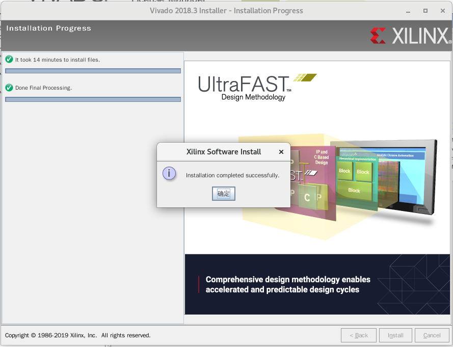

软件安装¶


Altera 安装¶
下载需要的所有文件，放在一个目录下
arria10-19.2.0.57.qdz ModelSimProSetup-19.2.0.57-linux.run
cyclone10gx-19.2.0.57.qdz QuartusProSetup-19.2.0.57-linux.run
modelsim-part2-19.2.0.57-linux.qdz stratix10-19.2.0.57.qdz
chmod +x QuartusProSetup-19.2.0.57-linux.run
./QuartusProSetup-19.2.0.57-linux.run


在安装路径下有以下文件
devdata licenses modelsim_ase qsys syscon
ip logs nios2eds quartus uninstall
quartus/bin 文件夹内存放quartus启动的脚本
./quartus
modelsim_ase/bin 文件夹内存放modelsim启动的脚本
./vsim
Vivado 安装¶
tar -zxvf Xilinx_Vivado_SDK_2018.3_1207_2324.tar.gz
cd Xilinx_Vivado_SDK_2018.3_1207_2324
./xsetup
点击 continue选择不下载最新版本，然后点击Next进入下一步

点击三个可选框，然后点击Next进入下一步

选择 Vinado HL Design Edition，然后点击Next进入下一步

直接点击Next进入下一步

选择安装目录，这里我选择安装到 /home/wuhongyi/Xilinx ，然后点击Next进入下一步

等待安装完成
将 vivadoLicence.lic 文件复制到 安装目录，这里为 /home/wuhongyi/Xilinx
安装完成之后会弹出以下界面
点击左上方的 Load License，选择我们的 vivadoLicence.lic 文件
然后点击左上方的 View License Status 可查看破解的IP核